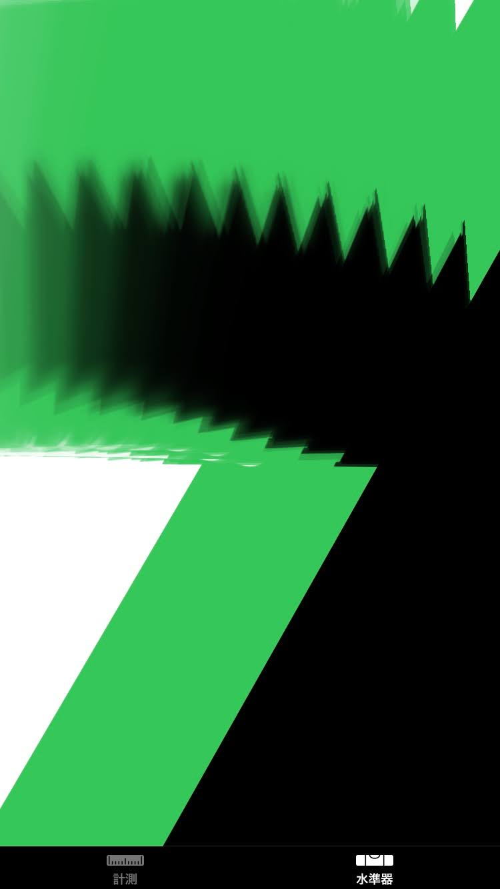
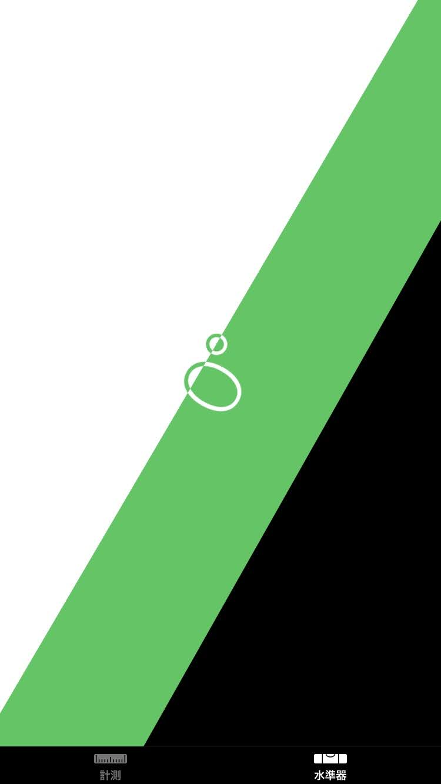

STAGE 01 // WELCOME
新規アプリ「LevelOverlay1」を体験しよう
水準器 × 傾斜 × 画像。角度を感知する次世代のクリエイティブ。

SWIPE DOWN TO EXPLORE
▼
▼
▼
STAGE 02 // STYLISH DESIGN
スタイリッシュで近未来的な操作感
スマホの角度で切り貼り可能。色の変化や画像保存もお手の物。

STAGE 03 // VISION
この水準器画像をもっとかっこよくしたい！
日常の測定ビューを、映画のUIのようなエッジの効いたアートピースへ昇華。

STAGE 04 // LIVE DEMO
一度タップで切り抜き、もう一度で貼り付け
直観的カンタン操作。角度と連動して思い通りの構図を即座にクリエイト。
34S DEMO LOOP
STAGE 05 // TRANSFORMATION
さぁ、つぎはあなたの番です！
水準器による画像再構築で、最高の体験を。
ORIGINAL
PAIR 01
✨ EDITED
PAIR 01
ORIGINAL
PAIR 02
✨ EDITED
PAIR 02
ORIGINAL
PAIR 03

✨ EDITED
PAIR 03
ORIGINAL
PAIR 01
✨ EDITED
PAIR 01
ORIGINAL
PAIR 02
✨ EDITED
PAIR 02
ORIGINAL
PAIR 03
✨ EDITED
PAIR 03
＼ タップしてみて！ 今すぐ体験 ／
LevelOverlay1 を起動する
➔